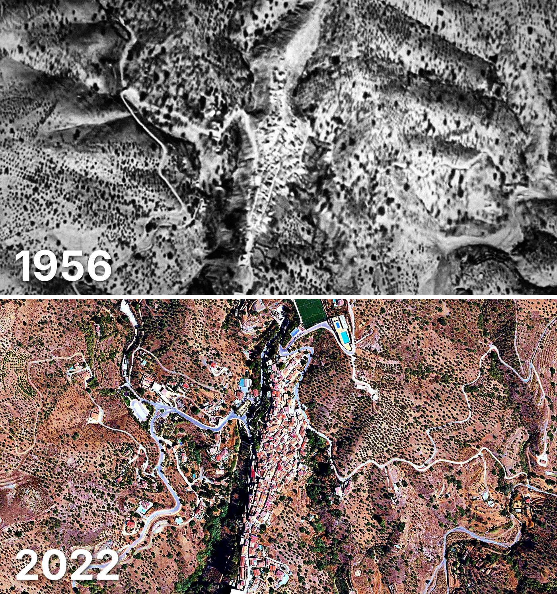

Totalán
Totalán tiene 341 edificios y 375 viviendas, y 797 habitantes en 2025. Al menos la mitad de sus edificios ya estaba en pie en 1956.
Cuándo se construyeron sus edificios
Desde 2015 se han terminado 7 edificios.

Las calles de Totalán con más viviendas
- Calle del Real · 31 viviendas
- Calle Cura Barroso · 21 viviendas
- Calle Enrique Castillo · 20 viviendas
- Avenida Andalucía · 18 viviendas
- Calle Axarquía · 18 viviendas
- Calle Luna · 18 viviendas
- Pasaje de la Avenida de Andalucía · 14 viviendas
- Calle Pasionaria · 13 viviendas
Todas las calles de Totalán (28) →
Toda la información de Totalán en CASAS.ES →
Fotos de Totalán para publicar
Estas fotos aéreas de Totalán, de 1956 y de 2022, se pueden publicar gratis en un periódico, un blog, la web del ayuntamiento o las redes, citando la fuente como se indica debajo.

Descargar: las dos juntas · 1956 · 2022 (JPG, 1.400 px de ancho)


Texto listo para publicar
Totalán desde el aire: así era en 1956 y así es en 2022
Las dos fotos muestran el mismo encuadre de Totalán con 66 años de diferencia: arriba, el Vuelo Americano de 1956; abajo, la foto aérea del PNOA de septiembre de 2022. Hoy Totalán tiene 341 edificios y 375 viviendas, y 797 habitantes en 2025. La mitad de sus edificios es de 1955 o posterior. El 60 % de sus edificios ya estaba en pie antes de 1960.
Más datos de Totalán en CASAS.ES: casas.es/malaga/totalan
Cita para copiar
Fotos: Vuelo Americano Serie B (1956-57) y PNOA 2022, cedidos por © Instituto Geográfico Nacional (CC BY 4.0, scne.es). Datos y composición: <a href="https://casas.es/malaga/totalan/">los datos de Totalán en CASAS.ES</a>Descarga: municipios (CSV) · calles (CSV) · Wikidata (Q973594) · cómo usarlos en Python (dev.to) · también en OSF, Figshare, B2SHARE y Mendeley Data